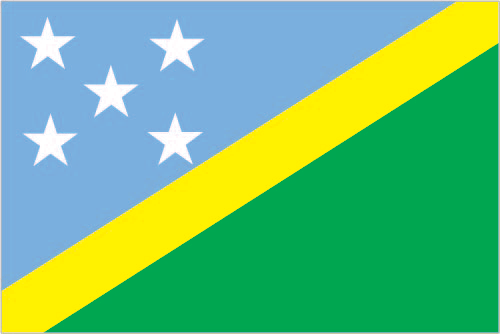
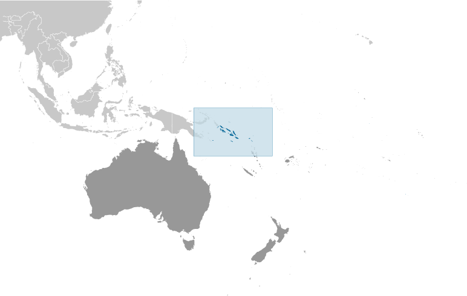
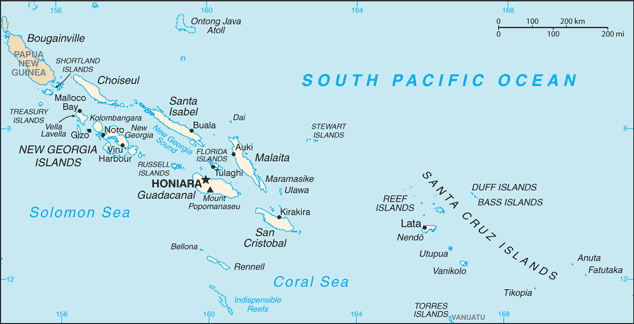

Australia-Oceania :: SOLOMON ISLANDS
Introduction :: SOLOMON ISLANDS
-
The UK established a protectorate over the Solomon Islands in the 1890s. Some of the bitterest fighting of World War II occurred on this archipelago. Self-government was achieved in 1976 and independence two years later. Ethnic violence, government malfeasance, endemic crime, and a narrow economic base have undermined stability and civil society. In June 2003, then Prime Minister Sir Allan KEMAKEZA sought the assistance of Australia in reestablishing law and order; the following month, an Australian-led multinational force arrived to restore peace and disarm ethnic militias. The Regional Assistance Mission to the Solomon Islands (RAMSI) has generally been effective in restoring law and order and rebuilding government institutions.
Geography :: SOLOMON ISLANDS
-
Oceania, group of islands in the South Pacific Ocean, east of Papua New Guinea8 00 S, 159 00 EOceaniatotal: 28,896 sq kmland: 27,986 sq kmwater: 910 sq kmcountry comparison to the world: 144slightly smaller than Maryland0 km5,313 kmmeasured from claimed archipelagic baselinesterritorial sea: 12 nmexclusive economic zone: 200 nmcontinental shelf: 200 nmtropical monsoon; few temperature and weather extremesmostly rugged mountains with some low coral atollsmean elevation: NAelevation extremes: lowest point: Pacific Ocean 0 mhighest point: Mount Popomanaseu 2,335 mfish, forests, gold, bauxite, phosphates, lead, zinc, nickelagricultural land: 3.9%arable land 0.7%; permanent crops 2.9%; permanent pasture 0.3%forest: 78.9%other: 17.2% (2011 est.)0 sq km NA (2012)most of the population lives along the coastal regions; about one in five live in urban areas, and of these some two-thirds reside in Honiara, the largest town and chief porttropical cyclones, but rarely destructive; geologically active region with frequent earthquakes, tremors, and volcanic activity; tsunamisvolcanism: Tinakula (851 m) has frequent eruption activity, while an eruption of Savo (485 m) could affect the capital Honiara on nearby Guadalcanaldeforestation; soil erosion; many of the surrounding coral reefs are dead or dyingparty to: Biodiversity, Climate Change, Climate Change-Kyoto Protocol, Desertification, Environmental Modification, Law of the Sea, Marine Dumping, Marine Life Conservation, Ozone Layer Protection, Whalingsigned, but not ratified: none of the selected agreementsstrategic location on sea routes between the South Pacific Ocean, the Solomon Sea, and the Coral Sea; on 2 April 2007 an undersea earthquake measuring 8.1 on the Richter scale occurred 345 km WNW of the capital Honiara; the resulting tsunami devastated coastal areas of Western and Choiseul provinces with dozens of deaths and thousands dislocated; the provincial capital of Gizo was especially hard hit
People and Society :: SOLOMON ISLANDS
-
647,581 (July 2017 est.)country comparison to the world: 167noun: Solomon Islander(s)adjective: Solomon IslanderMelanesian 95.3%, Polynesian 3.1%, Micronesian 1.2%, other 0.3% (2009 est.)Melanesian pidgin (in much of the country is lingua franca), English (official but spoken by only 1%-2% of the population), 120 indigenous languagesProtestant 73.4% (Church of Melanesia 31.9%, South Sea Evangelical 17.1%, Seventh Day Adventist 11.7%, United Church 10.1%, Christian Fellowship Church 2.5%), Roman Catholic 19.6%, other Christian 2.9%, other 4%, none 0.03%, unspecified 0.1% (2009 est.)0-14 years: 34.59% (male 115,329/female 108,645)15-24 years: 19.99% (male 66,608/female 62,843)25-54 years: 36.5% (male 120,339/female 116,048)55-64 years: 4.65% (male 15,316/female 14,828)65 years and over: 4.27% (male 13,096/female 14,529) (2017 est.)total dependency ratio: 75.4youth dependency ratio: 69.4elderly dependency ratio: 6potential support ratio: 16.6 (2015 est.)total: 22.5 yearsmale: 22.3 yearsfemale: 22.8 years (2017 est.)country comparison to the world: 1781.94% (2017 est.)country comparison to the world: 5324.9 births/1,000 population (2017 est.)country comparison to the world: 493.8 deaths/1,000 population (2017 est.)country comparison to the world: 213-1.7 migrant(s)/1,000 population (2017 est.)country comparison to the world: 153most of the population lives along the coastal regions; about one in five live in urban areas, and of these some two-thirds reside in Honiara, the largest town and chief porturban population: 23.2% of total population (2017)rate of urbanization: 3.79% annual rate of change (2015-20 est.)HONIARA (capital) 73,000 (2014)at birth: 1.05 male(s)/female0-14 years: 1.06 male(s)/female15-24 years: 1.06 male(s)/female25-54 years: 1.04 male(s)/female55-64 years: 1.02 male(s)/female65 years and over: 0.92 male(s)/femaletotal population: 1.04 male(s)/female (2016 est.)21.6 yearsnote: median age at first birth among women 25-29 (2006/07 est.)114 deaths/100,000 live births (2015 est.)country comparison to the world: 70total: 14.7 deaths/1,000 live birthsmale: 16.8 deaths/1,000 live birthsfemale: 12.5 deaths/1,000 live births (2017 est.)country comparison to the world: 102total population: 75.6 yearsmale: 72.9 yearsfemale: 78.3 years (2017 est.)country comparison to the world: 1033.16 children born/woman (2017 est.)country comparison to the world: 505.1% of GDP (2014)country comparison to the world: 1380.2 physicians/1,000 population (2011)1.3 beds/1,000 population (2012)improved:urban: 93.2% of populationrural: 77.2% of populationtotal: 80.8% of populationunimproved:urban: 6.8% of populationrural: 22.8% of populationtotal: 19.2% of population (2015 est.)improved:urban: 81.4% of populationrural: 15% of populationtotal: 29.8% of populationunimproved:urban: 18.6% of populationrural: 85% of populationtotal: 70.2% of population (2015 est.)NANANA22.5% (2016)country comparison to the world: 7511.5% (2007)country comparison to the world: 6510% of GDP (2010)country comparison to the world: 18definition: age 15 and over can read and writetotal population: 84.1%male: 88.9%female: 79.2% (2009 est.)total: 9 yearsmale: 10 yearsfemale: 9 years (2007)
Government :: SOLOMON ISLANDS
-
conventional long form: noneconventional short form: Solomon Islandslocal long form: nonelocal short form: Solomon Islandsformer: British Solomon Islandsetymology: Spanish explorer Alvaro de MENDANA named the isles in 1568 after the wealthy biblical King SOLOMON in the mistaken belief that the islands contained great richesparliamentary democracy (National Parliament) under a constitutional monarchy; a Commonwealth realmname: Honiarageographic coordinates: 9 26 S, 159 57 Etime difference: UTC+11 (16 hours ahead of Washington, DC, during Standard Time)9 provinces and 1 city*; Central, Choiseul, Guadalcanal, Honiara*, Isabel, Makira and Ulawa, Malaita, Rennell and Bellona, Temotu, Western7 July 1978 (from the UK)Independence Day, 7 July (1978)adopted 31 May 1978, effective 7 July 1978; new constitution drafted in 2014 (2016)mixed legal system of English common law and customary lawhas not submitted an ICJ jurisdiction declaration; non-party state to the ICCtcitizenship by birth: nocitizenship by descent only: at least one parent must be a citizen of the Solomon Islandsdual citizenship recognized: noresidency requirement for naturalization: 7 years21 years of age; universalchief of state: Queen ELIZABETH II (since 6 February 1952); represented by Governor General Frank KABUI (since 7 July 2009)head of government: acting Prime Minister Manasseh SOGAVARE (since 9 December 2014)cabinet: Cabinet appointed by the governor general on the advice of the prime ministerelections/appointments: the monarchy is hereditary; governor general appointed by the monarch on the advice of the National Parliament for up to 5 years (eligible for a second term); following legislative elections, the leader of the majority party or majority coalition usually elected prime minister by the National Parliament; deputy prime minister appointed by the governor general on the advice of the prime minister from among members of the National Parliamentelection results: Manasseh SOGAVARE (independent) defeated in no-confidence vote on 6 November 2017; elections for a new prime minister will take place when parliament reconvenesdescription: unicameral National Parliament (50 seats; members directly elected in single-seat constituencies by simple majority vote to serve 4-year terms)elections: last held on 19 November 2014 (next to be held in 2018)election results: percent of vote by party - UDP 10.7%, DAP 7.8%, PAP 4.4%, other 20.8%, independent 56.3%; seats by party - DAP 7, UDP 5, PAP 3, KPSI 1, SIPFP 1, SIPRA 1, independent 32highest court(s): Court of Appeal (consists of the court president, and ex officio members to include the High Court chief justice and its puisne judges); High Court (consists of the chief justice and puisne judges as prescribed by the National Parliament)judge selection and term of office: Court of Appeal and High Court president, chief justices, and puisne judges appointed by the governor-general upon recommendation of the Judicial and Legal Service Commission, chaired by the chief justice to include 5 members, mostly judicial officials and legal professionals; all judges appointed until retirement at age 60subordinate courts: Magistrates' Courts; Customary Land Appeal Court; local courtsDemocratic Alliance Party or DAP [Steve ABANA]Kadere Party of Solomon Islands or KPSI [Peter BOYERS]People's Alliance Party or PAP [Nathaniel WAENA]Solomon Islands People First Party or SIPFP [Dr. Jimmie RODGERS]Solomon Islands Party for Rural Advancement or SIPRA [Manasseh MAELANGA]United Democratic Party or UDP [Sir Thomas Ko CHAN]note: in general, Solomon Islands politics is characterized by fluid coalitionsIsatabu Freedom Movement or IFMMalaita Eagle Force or MEFnote: these rival armed ethnic factions crippled the Solomon Islands in a wave of violence from 1999 to 2003ACP, ADB, AOSIS, C, EITI (candidate country), ESCAP, FAO, G-77, IBRD, ICAO, ICRM, IDA, IFAD, IFC, IFRCS, ILO, IMF, IMO, IOC, ITU, MIGA, OPCW, PIF, Sparteca, SPC, UN, UNCTAD, UNESCO, UPU, WFTU, WHO, WMO, WTOchief of mission: Ambassador Robert SISILO (since 21 July 2017)chancery: 800 Second Avenue, Suite 400L, New York, NY 10017telephone: [1] (212) 599-6192, 6193FAX: [1] (212) 661-8925the US does not have an embassy in the Solomon Islands; the US Ambassador to Papua New Guinea is accredited to the Solomon Islandsdivided diagonally by a thin yellow stripe from the lower hoist-side corner; the upper triangle (hoist side) is blue with five white five-pointed stars arranged in an X pattern; the lower triangle is green; blue represents the ocean; green the land; and yellow sunshine; the five stars stand for the five main island groups of the Solomon Islandsnational colors: blue, yellow, green, whitename: "God Save Our Solomon Islands"lyrics/music: Panapasa BALEKANA and Matila BALEKANA/Panapasa BALEKANAnote: adopted 1978
Economy :: SOLOMON ISLANDS
-
The bulk of the population depends on agriculture, fishing, and forestry for at least part of its livelihood. Most manufactured goods and petroleum products must be imported. The islands are rich in undeveloped mineral resources such as lead, zinc, nickel, and gold. Prior to the arrival of The Regional Assistance Mission to the Solomon Islands (RAMSI), severe ethnic violence, the closure of key businesses, and an empty government treasury culminated in economic collapse. RAMSI's efforts to restore law and order and economic stability have led to modest growth as the economy rebuilds.$1.257 billion (2016 est.)$1.202 billion (2015 est.)$1.16 billion (2014 est.)note: data are in 2016 dollarscountry comparison to the world: 202$1.233 billion (2016 est.)3.3% (2016 est.)2.5% (2015 est.)2.3% (2014 est.)country comparison to the world: 90$2,100 (2016 est.)$2,100 (2015 est.)$2,100 (2014 est.)note: data are in 2016 dollarscountry comparison to the world: 20514% of GDP (2016 est.)14.5% of GDP (2015 est.)10.6% of GDP (2014 est.)country comparison to the world: 77agriculture: 34.4%industry: 7.6%services: 58% (2016 est.)cocoa, coconuts, palm kernels, rice, fruit; cattle, pigs; fish; timberfish (tuna), mining, timber3.2% (2016 est.)country comparison to the world: 73202,500 (2007 est.)country comparison to the world: 170agriculture: 75%industry: 5%services: 20% (2000 est.)NA%NA%lowest 10%: NA%highest 10%: NA%revenues: $428.2 millionexpenditures: $453.4 million (2016 est.)36.2% of GDP (2016 est.)country comparison to the world: 53-2.1% of GDP (2016 est.)country comparison to the world: 929% of GDP (2016 est.)10.5% of GDP (2015 est.)country comparison to the world: 197calendar year0.5% (2016 est.)-0.6% (2015 est.)country comparison to the world: 9110.1% (31 December 2016 est.)10.48% (31 December 2015 est.)country comparison to the world: 81$461 million (31 December 2016 est.)$405.7 million (31 December 2015 est.)country comparison to the world: 168$476.3 million (31 December 2016 est.)$427.4 million (31 December 2015 est.)country comparison to the world: 186$150.7 million (31 December 2016 est.)$84.69 million (31 December 2015 est.)country comparison to the world: 186$-49 million (2016 est.)$-36.1 million (2015 est.)country comparison to the world: 62$419.9 million (2015 est.)$420.7 million (2015 est.)country comparison to the world: 177timber, fish, copra, palm oil, cocoaChina 62.4%, Italy 7%, UK 4.4% (2016)$425.7 million (2015 est.)country comparison to the world: 193food, plant and equipment, manufactured goods, fuels, chemicalsChina 25.3%, Australia 15.5%, Singapore 9.6%, Malaysia 9.5%, Japan 5.2%, South Korea 5%, NZ 5%, Papua New Guinea 4.4% (2016)$491.5 million (31 December 2013 est.)$207.4 million (31 December 2015 est.)country comparison to the world: 178$571.2 million (31 December 2016 est.)$536.6 million (31 December 2015 est.)country comparison to the world: 121$50.1 million (31 December 2016 est.)$50.1 million (31 December 2015 est.)country comparison to the world: 107Solomon Islands dollars (SBD) per US dollar -7.94 (2016 est.)7.94 (2015 est.)7.9147 (2014 est.)7.3754 (2013 est.)7.36 (2012 est.)
Energy :: SOLOMON ISLANDS
-
population without electricity: 495,321electrification - total population: 23%electrification - urban areas: 62%electrification - rural areas: 13% (2012)90 million kWh (2015 est.)country comparison to the world: 20083.7 million kWh (2015 est.)country comparison to the world: 2010 kWh (2016 est.)country comparison to the world: 1120 kWh (2016 est.)country comparison to the world: 12837,000 kW (2015 est.)country comparison to the world: 19997.3% of total installed capacity (2015 est.)country comparison to the world: 410% of total installed capacity (2015 est.)country comparison to the world: 570% of total installed capacity (2015 est.)country comparison to the world: 1655.4% of total installed capacity (2015 est.)country comparison to the world: 930 bbl/day (2016 est.)country comparison to the world: 1140 bbl/day (2014 est.)country comparison to the world: 990 bbl/day (2014 est.)country comparison to the world: 1030 bbl (1 January 2017 es)country comparison to the world: 1130 bbl/day (2014 est.)country comparison to the world: 1221,600 bbl/day (2015 est.)country comparison to the world: 1980 bbl/day (2014 est.)country comparison to the world: 1361,554 bbl/day (2014 est.)country comparison to the world: 1930 cu m (2013 est.)country comparison to the world: 1130 cu m (2013 est.)country comparison to the world: 1610 cu m (2013 est.)country comparison to the world: 740 cu m (2013 est.)country comparison to the world: 970 cu m (1 January 2014 es)country comparison to the world: 119300,000 Mt (2013 est.)country comparison to the world: 190
Communications :: SOLOMON ISLANDS
-
total subscriptions: 7,405subscriptions per 100 inhabitants: 1 (July 2016 est.)country comparison to the world: 201total: 416,572subscriptions per 100 inhabitants: 66 (July 2016 est.)country comparison to the world: 174domestic: mobile-cellular telephone density is about 65 per 100 personsinternational: country code - 677; satellite earth station - 1 Intelsat (Pacific Ocean) (2016)Solomon Islands Broadcasting Corporation (SIBC) is the sole TV broadcaster with 1 station; multi-channel pay-TV is available; SIBC operates 2 national radio stations and 2 provincial stations; 2 local commercial radio stations; Radio Australia is available via satellite feed (2009).sbtotal: 69,859percent of population: 11.0% (July 2016 est.)country comparison to the world: 187
Transportation :: SOLOMON ISLANDS
-
number of registered air carriers: 1inventory of registered aircraft operated by air carriers: 3annual passenger traffic on registered air carriers: 373,738annual freight traffic on registered air carriers: 3,691,584 mt-km (2015)H4 (2016)36 (2013)country comparison to the world: 109total: 11,524 to 2,437 m: 1 (2013)total: 351,524 to 2,437 m: 1914 to 1,523 m: 10under 914 m: 24 (2013)3 (2013)total: 1,390 kmpaved: 34 kmunpaved: 1,356 kmnote: includes 920 km of private plantation roads (2011)country comparison to the world: 179major seaport(s): Honiara, Malloco Bay, Viru Harbor, Tulaghi
Military and Security :: SOLOMON ISLANDS
-
no regular military forces; Royal Solomon Islands Police Force (2013)
Transnational Issues :: SOLOMON ISLANDS
-
since 2003, the Regional Assistance Mission to Solomon Islands, consisting of police, military, and civilian advisors drawn from 15 countries, has assisted in reestablishing and maintaining civil and political order while reinforcing regional stability and securitycurrent situation: the Solomon Islands is a source and destination country for local adults and children and Southeast Asian men and women subjected to forced labor and forced prostitution; women from China, Indonesia, Malaysia, and the Philippines are recruited for legitimate work and upon arrival are forced into prostitution; men from Indonesia and Malaysia recruited to work in the Solomon Islands’ mining and logging industries may be subjected to forced labor; local children are forced into prostitution near foreign logging camps, on fishing vessels, at hotels, and entertainment venues; some local children are also sold by their parents for marriage to foreign workers or put up for “informal adoption” to pay off debts and then find themselves forced into domestic servitude or forced prostitutiontier rating: Tier 2 Watch List – the Solomon Islands does not fully comply with the minimum standards for the elimination of trafficking; however, it is making significant efforts to do so; in 2014, the Solomon Islands was granted a waiver from an otherwise required downgrade to Tier 3 because its government has a written plan that, if implemented, would constitute making significant efforts to bring itself into compliance with the minimum standards for the elimination of trafficking; the government gazetted implementing regulations for the 2012 immigration act prohibiting transnational trafficking, but the penalties are not sufficiently stringent because they allow the option of paying a fine; a new draft law to address these weaknesses awaits parliamentary review; no new trafficking investigations were conducted, even after labor inspections at logging and fishing companies, no existing cases led to prosecutions or convictions, and no funding was allocated for national anti-trafficking efforts; authorities did not identify or protect any victims and lack any procedures or shelters to do so; civil society and religious organizations provide most of the limited services available; a lack of understanding of the crime of trafficking remains a serious challenge (2015)